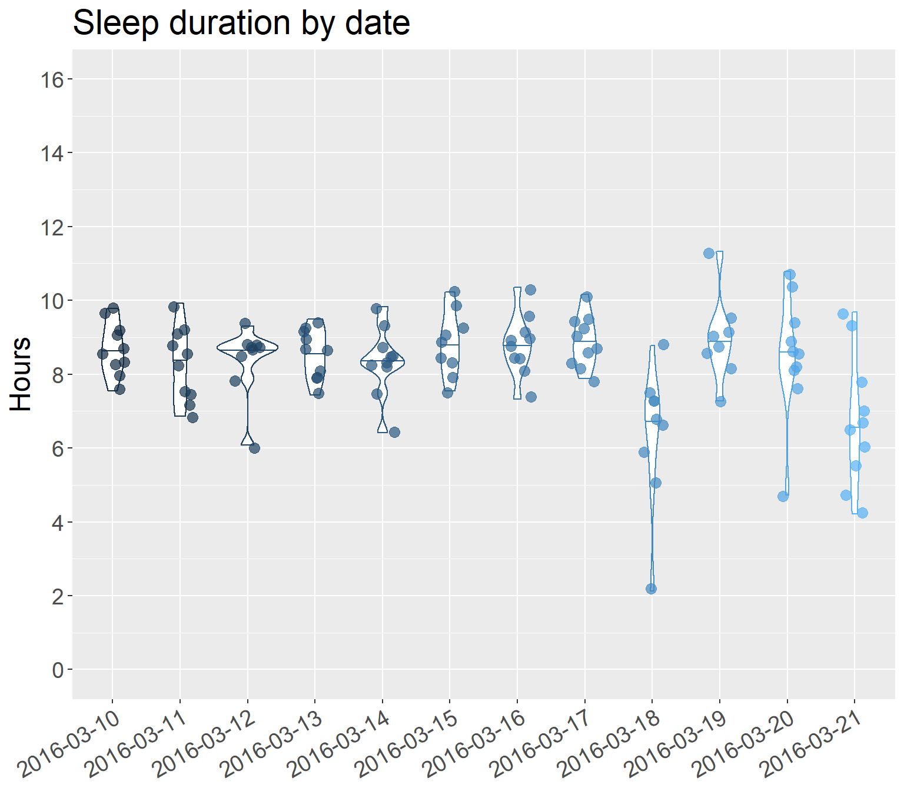
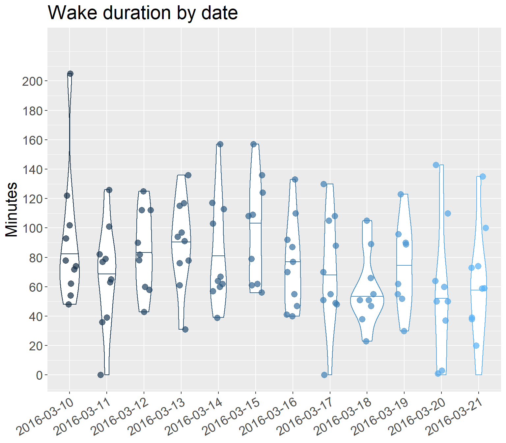

Chapter 11 Impact of flight on tournament sleep
TO DO: Conduct assumption tests. Given that the assumption testing for RQ3 (correlation analysis) showed that “many variables across the load, sleep, jetlag, and well-being measures do not approximate normal”, we proceed for now on the basis that assumption testing for RQ2 will show similar results.
11.1 Omnibus models: Based on in-flight duration group
| Test effect | Statistic | df | p | Sig. difference? |
|---|---|---|---|---|
| Sleep duration | ||||
| Main effect: In-flight duration group | 0.0195 | 1.0000 | 0.8890 | No |
| Main effect: Date | 3.7801 | 4.2523 | 0.0036 | Yes |
| Interaction: Group x Date | 1.2973 | 4.2523 | 0.2668 | No |
| Sleep efficiency | ||||
| Main effect: In-flight duration group | 0.8577 | 1.0000 | 0.3544 | No |
| Main effect: Date | 1.3428 | 4.0555 | 0.2508 | No |
| Interaction: Group x Date | 1.0400 | 4.0555 | 0.3853 | No |
| Sleep latency | ||||
| Main effect: In-flight duration group | 0.0946 | 1.0000 | 0.7584 | No |
| Main effect: Date | 0.8769 | 4.2523 | 0.4819 | No |
| Interaction: Group x Date | 0.6119 | 4.2523 | 0.6641 | No |
| Average duration of wake bouts | ||||
| Main effect: In-flight duration group | 2.2110 | 1.0000 | 0.1370 | No |
| Main effect: Date | 1.0944 | 3.9724 | 0.3572 | No |
| Interaction: Group x Date | 1.6645 | 3.9724 | 0.1556 | No |
| Number of wake bouts | ||||
| Main effect: In-flight duration group | 0.1377 | 1.0000 | 0.7106 | No |
| Main effect: Date | 2.9938 | 4.3257 | 0.0148 | Yes |
| Interaction: Group x Date | 1.0772 | 4.3257 | 0.3677 | No |
| Total wake duration | ||||
| Main effect: In-flight duration group | 1.2368 | 1.0000 | 0.2661 | No |
| Main effect: Date | 2.5267 | 3.8604 | 0.0407 | Yes |
| Interaction: Group x Date | 1.0050 | 3.8604 | 0.4017 | No |
11.1.1 Pairwise tests for sleep duration
11.1.1.1 Main effect of date
| Tested pair | p | p_bonferroni | Pairwise difference? |
|---|---|---|---|
| subset_march_10_vs_18 | 0.00000 | 0.00076 | Yes |
| subset_march_10_vs_21 | 0.00029 | 0.00076 | Yes |
| subset_march_11_vs_18 | 0.00048 | 0.00076 | Yes |
| subset_march_12_vs_18 | 0.00075 | 0.00076 | Yes |
| subset_march_12_vs_21 | 0.00070 | 0.00076 | Yes |
| subset_march_13_vs_18 | 0.00046 | 0.00076 | Yes |
| subset_march_15_vs_18 | 0.00004 | 0.00076 | Yes |
| subset_march_16_vs_18 | 0.00000 | 0.00076 | Yes |
| subset_march_16_vs_21 | 0.00003 | 0.00076 | Yes |
| subset_march_17_vs_18 | 0.00000 | 0.00076 | Yes |
| subset_march_17_vs_21 | 0.00000 | 0.00076 | Yes |
| subset_march_10_vs_11 | 0.11301 | 0.00076 | No |
| subset_march_10_vs_12 | 0.35764 | 0.00076 | No |
| subset_march_10_vs_13 | 0.64030 | 0.00076 | No |
| subset_march_10_vs_14 | 0.23407 | 0.00076 | No |
| subset_march_10_vs_15 | 0.64408 | 0.00076 | No |
| subset_march_10_vs_16 | 0.73532 | 0.00076 | No |
| subset_march_10_vs_17 | 0.52552 | 0.00076 | No |
| subset_march_10_vs_19 | 0.62195 | 0.00076 | No |
| subset_march_10_vs_20 | 0.94257 | 0.00076 | No |
| subset_march_11_vs_12 | 0.78777 | 0.00076 | No |
| subset_march_11_vs_13 | 0.46976 | 0.00076 | No |
| subset_march_11_vs_14 | NA | 0.00076 | No |
| subset_march_11_vs_15 | 0.14729 | 0.00076 | No |
| subset_march_11_vs_16 | 0.12038 | 0.00076 | No |
| subset_march_11_vs_17 | 0.00412 | 0.00076 | No |
| subset_march_11_vs_19 | 0.23004 | 0.00076 | No |
| subset_march_11_vs_20 | 0.41494 | 0.00076 | No |
| subset_march_11_vs_21 | 0.00429 | 0.00076 | No |
| subset_march_12_vs_13 | 0.81671 | 0.00076 | No |
| subset_march_12_vs_14 | 0.50713 | 0.00076 | No |
| subset_march_12_vs_15 | 0.31740 | 0.00076 | No |
| subset_march_12_vs_16 | 0.08755 | 0.00076 | No |
| subset_march_12_vs_17 | 0.03915 | 0.00076 | No |
| subset_march_12_vs_19 | 0.10071 | 0.00076 | No |
| subset_march_12_vs_20 | 0.82686 | 0.00076 | No |
| subset_march_13_vs_14 | 0.73065 | 0.00076 | No |
| subset_march_13_vs_15 | 0.64154 | 0.00076 | No |
| subset_march_13_vs_16 | 0.66511 | 0.00076 | No |
| subset_march_13_vs_17 | 0.40435 | 0.00076 | No |
| subset_march_13_vs_19 | 0.46426 | 0.00076 | No |
| subset_march_13_vs_20 | 0.89000 | 0.00076 | No |
| subset_march_13_vs_21 | 0.02862 | 0.00076 | No |
| subset_march_14_vs_15 | 0.24196 | 0.00076 | No |
| subset_march_14_vs_16 | 0.26086 | 0.00076 | No |
| subset_march_14_vs_17 | 0.17079 | 0.00076 | No |
| subset_march_14_vs_18 | 0.00543 | 0.00076 | No |
| subset_march_14_vs_19 | 0.21615 | 0.00076 | No |
| subset_march_14_vs_20 | 0.60634 | 0.00076 | No |
| subset_march_14_vs_21 | 0.01645 | 0.00076 | No |
| subset_march_15_vs_16 | 0.87636 | 0.00076 | No |
| subset_march_15_vs_17 | 0.86818 | 0.00076 | No |
| subset_march_15_vs_19 | 0.90741 | 0.00076 | No |
| subset_march_15_vs_20 | 0.82615 | 0.00076 | No |
| subset_march_15_vs_21 | 0.00231 | 0.00076 | No |
| subset_march_16_vs_17 | 0.76665 | 0.00076 | No |
| subset_march_16_vs_19 | 0.65597 | 0.00076 | No |
| subset_march_16_vs_20 | 0.75685 | 0.00076 | No |
| subset_march_17_vs_19 | 0.96609 | 0.00076 | No |
| subset_march_17_vs_20 | 0.49586 | 0.00076 | No |
| subset_march_18_vs_19 | 0.00096 | 0.00076 | No |
| subset_march_18_vs_20 | 0.00191 | 0.00076 | No |
| subset_march_18_vs_21 | 0.90672 | 0.00076 | No |
| subset_march_19_vs_20 | 0.60021 | 0.00076 | No |
| subset_march_19_vs_21 | 0.00411 | 0.00076 | No |
| subset_march_20_vs_21 | 0.00639 | 0.00076 | No |
11.1.1.2 Summary stats: Sleep duration by date
| date | median | IQR |
|---|---|---|
| 2016-03-10 | 8.65 | 0.90 |
| 2016-03-11 | 8.43 | 1.53 |
| 2016-03-12 | 8.70 | 0.38 |
| 2016-03-13 | 8.63 | 1.10 |
| 2016-03-14 | 8.33 | 0.45 |
| 2016-03-15 | 8.83 | 0.85 |
| 2016-03-16 | 8.80 | 0.65 |
| 2016-03-17 | 8.80 | 0.95 |
| 2016-03-18 | 6.73 | 1.43 |
| 2016-03-19 | 8.97 | 0.80 |
| 2016-03-20 | 8.60 | 1.23 |
| 2016-03-21 | 6.57 | 1.92 |

11.1.2 Pairwise tests for number of wake bouts
11.1.2.1 Main effect of date
| Tested pair | p | p_bonferroni | Pairwise difference? |
|---|---|---|---|
| subset_march_10_vs_11 | 0.46211 | 0.00076 | No |
| subset_march_10_vs_12 | 0.13266 | 0.00076 | No |
| subset_march_10_vs_13 | 0.11945 | 0.00076 | No |
| subset_march_10_vs_14 | 0.31084 | 0.00076 | No |
| subset_march_10_vs_15 | 0.11601 | 0.00076 | No |
| subset_march_10_vs_16 | 0.76440 | 0.00076 | No |
| subset_march_10_vs_17 | 0.67310 | 0.00076 | No |
| subset_march_10_vs_18 | 0.09920 | 0.00076 | No |
| subset_march_10_vs_19 | 0.30794 | 0.00076 | No |
| subset_march_10_vs_20 | 0.04005 | 0.00076 | No |
| subset_march_10_vs_21 | 0.08613 | 0.00076 | No |
| subset_march_11_vs_12 | 0.14844 | 0.00076 | No |
| subset_march_11_vs_13 | 0.20930 | 0.00076 | No |
| subset_march_11_vs_14 | 0.30866 | 0.00076 | No |
| subset_march_11_vs_15 | 0.23514 | 0.00076 | No |
| subset_march_11_vs_16 | 0.51323 | 0.00076 | No |
| subset_march_11_vs_17 | NA | 0.00076 | No |
| subset_march_11_vs_18 | 0.23457 | 0.00076 | No |
| subset_march_11_vs_19 | 0.30608 | 0.00076 | No |
| subset_march_11_vs_20 | 0.21871 | 0.00076 | No |
| subset_march_11_vs_21 | 0.16641 | 0.00076 | No |
| subset_march_12_vs_13 | 0.85837 | 0.00076 | No |
| subset_march_12_vs_14 | 0.72831 | 0.00076 | No |
| subset_march_12_vs_15 | 0.56509 | 0.00076 | No |
| subset_march_12_vs_16 | 0.27506 | 0.00076 | No |
| subset_march_12_vs_17 | 0.09271 | 0.00076 | No |
| subset_march_12_vs_18 | 0.01717 | 0.00076 | No |
| subset_march_12_vs_19 | 0.02984 | 0.00076 | No |
| subset_march_12_vs_20 | 0.07627 | 0.00076 | No |
| subset_march_12_vs_21 | 0.00326 | 0.00076 | No |
| subset_march_13_vs_14 | 0.72760 | 0.00076 | No |
| subset_march_13_vs_15 | 0.76591 | 0.00076 | No |
| subset_march_13_vs_16 | 0.41488 | 0.00076 | No |
| subset_march_13_vs_17 | 0.12507 | 0.00076 | No |
| subset_march_13_vs_18 | 0.00599 | 0.00076 | No |
| subset_march_13_vs_19 | 0.66051 | 0.00076 | No |
| subset_march_13_vs_20 | 0.00977 | 0.00076 | No |
| subset_march_13_vs_21 | 0.00364 | 0.00076 | No |
| subset_march_14_vs_15 | 0.69880 | 0.00076 | No |
| subset_march_14_vs_16 | 0.65694 | 0.00076 | No |
| subset_march_14_vs_17 | 0.21702 | 0.00076 | No |
| subset_march_14_vs_18 | 0.03013 | 0.00076 | No |
| subset_march_14_vs_19 | 0.79246 | 0.00076 | No |
| subset_march_14_vs_20 | 0.01259 | 0.00076 | No |
| subset_march_14_vs_21 | 0.01983 | 0.00076 | No |
| subset_march_15_vs_16 | 0.33657 | 0.00076 | No |
| subset_march_15_vs_17 | 0.07174 | 0.00076 | No |
| subset_march_15_vs_18 | 0.00507 | 0.00076 | No |
| subset_march_15_vs_19 | 0.21772 | 0.00076 | No |
| subset_march_15_vs_20 | 0.01653 | 0.00076 | No |
| subset_march_15_vs_21 | 0.00200 | 0.00076 | No |
| subset_march_16_vs_17 | 0.68792 | 0.00076 | No |
| subset_march_16_vs_18 | 0.00804 | 0.00076 | No |
| subset_march_16_vs_19 | 0.55387 | 0.00076 | No |
| subset_march_16_vs_20 | 0.05323 | 0.00076 | No |
| subset_march_16_vs_21 | 0.01798 | 0.00076 | No |
| subset_march_17_vs_18 | 0.19259 | 0.00076 | No |
| subset_march_17_vs_19 | 0.18638 | 0.00076 | No |
| subset_march_17_vs_20 | 0.18590 | 0.00076 | No |
| subset_march_17_vs_21 | 0.16403 | 0.00076 | No |
| subset_march_18_vs_19 | 0.00929 | 0.00076 | No |
| subset_march_18_vs_20 | 0.64055 | 0.00076 | No |
| subset_march_18_vs_21 | 0.42537 | 0.00076 | No |
| subset_march_19_vs_20 | 0.08452 | 0.00076 | No |
| subset_march_19_vs_21 | 0.00219 | 0.00076 | No |
| subset_march_20_vs_21 | NA | 0.00076 | No |
Note: Because the pairwise comparisons are interpreted against a stricter threshold for statistical significance (due to the Bonferroni adjustment), the table above shows that there are no statistically significant differences between date-pairs, despite the fact that the omnibus model indicates a significant main effect for date. This indicates that the main effect for date is negligible.
11.1.3 Pairwise tests for total wake duration
11.1.3.1 Main effect of date
| Tested pair | p | p_bonferroni | Pairwise difference? |
|---|---|---|---|
| subset_march_15_vs_18 | 0.00004 | 0.00076 | Yes |
| subset_march_15_vs_19 | 0.00006 | 0.00076 | Yes |
| subset_march_10_vs_11 | 0.38413 | 0.00076 | No |
| subset_march_10_vs_12 | 0.93353 | 0.00076 | No |
| subset_march_10_vs_13 | 0.27010 | 0.00076 | No |
| subset_march_10_vs_14 | 0.44849 | 0.00076 | No |
| subset_march_10_vs_15 | 0.01682 | 0.00076 | No |
| subset_march_10_vs_16 | 0.18622 | 0.00076 | No |
| subset_march_10_vs_17 | 0.34955 | 0.00076 | No |
| subset_march_10_vs_18 | 0.00445 | 0.00076 | No |
| subset_march_10_vs_19 | 0.21102 | 0.00076 | No |
| subset_march_10_vs_20 | 0.00836 | 0.00076 | No |
| subset_march_10_vs_21 | 0.02719 | 0.00076 | No |
| subset_march_11_vs_12 | 0.34754 | 0.00076 | No |
| subset_march_11_vs_13 | 0.22122 | 0.00076 | No |
| subset_march_11_vs_14 | 0.57812 | 0.00076 | No |
| subset_march_11_vs_15 | 0.18215 | 0.00076 | No |
| subset_march_11_vs_16 | 0.50842 | 0.00076 | No |
| subset_march_11_vs_17 | 0.75693 | 0.00076 | No |
| subset_march_11_vs_18 | 0.55789 | 0.00076 | No |
| subset_march_11_vs_19 | 0.77493 | 0.00076 | No |
| subset_march_11_vs_20 | 0.21510 | 0.00076 | No |
| subset_march_11_vs_21 | 0.42119 | 0.00076 | No |
| subset_march_12_vs_13 | 0.20384 | 0.00076 | No |
| subset_march_12_vs_14 | 0.94457 | 0.00076 | No |
| subset_march_12_vs_15 | 0.14103 | 0.00076 | No |
| subset_march_12_vs_16 | 0.19049 | 0.00076 | No |
| subset_march_12_vs_17 | 0.31303 | 0.00076 | No |
| subset_march_12_vs_18 | 0.00210 | 0.00076 | No |
| subset_march_12_vs_19 | 0.33561 | 0.00076 | No |
| subset_march_12_vs_20 | 0.01980 | 0.00076 | No |
| subset_march_12_vs_21 | 0.02375 | 0.00076 | No |
| subset_march_13_vs_14 | 0.16424 | 0.00076 | No |
| subset_march_13_vs_15 | 0.27910 | 0.00076 | No |
| subset_march_13_vs_16 | 0.19197 | 0.00076 | No |
| subset_march_13_vs_17 | 0.13822 | 0.00076 | No |
| subset_march_13_vs_18 | 0.00653 | 0.00076 | No |
| subset_march_13_vs_19 | 0.02916 | 0.00076 | No |
| subset_march_13_vs_20 | 0.00560 | 0.00076 | No |
| subset_march_13_vs_21 | 0.03058 | 0.00076 | No |
| subset_march_14_vs_15 | 0.00793 | 0.00076 | No |
| subset_march_14_vs_16 | 0.56280 | 0.00076 | No |
| subset_march_14_vs_17 | 0.30710 | 0.00076 | No |
| subset_march_14_vs_18 | 0.01544 | 0.00076 | No |
| subset_march_14_vs_19 | 0.15267 | 0.00076 | No |
| subset_march_14_vs_20 | 0.01084 | 0.00076 | No |
| subset_march_14_vs_21 | 0.08851 | 0.00076 | No |
| subset_march_15_vs_16 | 0.03654 | 0.00076 | No |
| subset_march_15_vs_17 | 0.02023 | 0.00076 | No |
| subset_march_15_vs_20 | 0.00474 | 0.00076 | No |
| subset_march_15_vs_21 | 0.00901 | 0.00076 | No |
| subset_march_16_vs_17 | 0.93479 | 0.00076 | No |
| subset_march_16_vs_18 | 0.07034 | 0.00076 | No |
| subset_march_16_vs_19 | 0.86579 | 0.00076 | No |
| subset_march_16_vs_20 | 0.10996 | 0.00076 | No |
| subset_march_16_vs_21 | 0.18502 | 0.00076 | No |
| subset_march_17_vs_18 | 0.46335 | 0.00076 | No |
| subset_march_17_vs_19 | 0.57394 | 0.00076 | No |
| subset_march_17_vs_20 | 0.23735 | 0.00076 | No |
| subset_march_17_vs_21 | 0.64682 | 0.00076 | No |
| subset_march_18_vs_19 | 0.16548 | 0.00076 | No |
| subset_march_18_vs_20 | 0.56420 | 0.00076 | No |
| subset_march_18_vs_21 | 0.74817 | 0.00076 | No |
| subset_march_19_vs_20 | 0.13629 | 0.00076 | No |
| subset_march_19_vs_21 | 0.41031 | 0.00076 | No |
| subset_march_20_vs_21 | 0.56936 | 0.00076 | No |
11.1.3.2 Summary stats: Total wake duration by date
| date | median | IQR |
|---|---|---|
| 2016-03-10 | 76 | 35 |
| 2016-03-11 | 71 | 36 |
| 2016-03-12 | 82 | 52 |
| 2016-03-13 | 92 | 34 |
| 2016-03-14 | 66 | 50 |
| 2016-03-15 | 108 | 62 |
| 2016-03-16 | 74 | 42 |
| 2016-03-17 | 62 | 51 |
| 2016-03-18 | 51 | 19 |
| 2016-03-19 | 76 | 37 |
| 2016-03-20 | 50 | 52 |
| 2016-03-21 | 59 | 36 |
## Warning: Removed 1 rows containing missing values (geom_point).
11.2 Omnibus models: Based on in-flight efficiency group
| Test effect | Statistic | df | p | Sig. difference? |
|---|---|---|---|---|
| Sleep duration | ||||
| Main effect: In-flight efficiency group | 0.1538 | 1.0000 | 0.6949 | No |
| Main effect: Date | 3.5297 | 4.5673 | 0.0046 | Yes |
| Interaction: Group x Date | 0.8803 | 4.5673 | 0.4857 | No |
| Sleep efficiency | ||||
| Main effect: In-flight efficiency group | 2.1564 | 1.0000 | 0.1420 | No |
| Main effect: Date | 1.3545 | 3.7514 | 0.2491 | No |
| Interaction: Group x Date | 1.5556 | 3.7514 | 0.1868 | No |
| Sleep latency | ||||
| Main effect: In-flight efficiency group | 0.4563 | 1.0000 | 0.4994 | No |
| Main effect: Date | 0.8400 | 4.7851 | 0.5167 | No |
| Interaction: Group x Date | 0.2911 | 4.7851 | 0.9119 | No |
| Average duration of wake bouts | ||||
| Main effect: In-flight efficiency group | 1.2656 | 1.0000 | 0.2606 | No |
| Main effect: Date | 1.1196 | 3.7708 | 0.3442 | No |
| Interaction: Group x Date | 1.6948 | 3.7708 | 0.1520 | No |
| Number of wake bouts | ||||
| Main effect: In-flight efficiency group | 0.5435 | 1.0000 | 0.4610 | No |
| Main effect: Date | 2.9144 | 4.9537 | 0.0126 | Yes |
| Interaction: Group x Date | 0.6997 | 4.9537 | 0.6223 | No |
| Total wake duration | ||||
| Main effect: In-flight efficiency group | 1.6841 | 1.0000 | 0.1944 | No |
| Main effect: Date | 2.6995 | 3.9328 | 0.0297 | Yes |
| Interaction: Group x Date | 1.2934 | 3.9328 | 0.2703 | No |
11.2.1 Pairwise tests for sleep duration
11.2.1.1 Main effect of date
Note: There is no need for additional pairwise tests here, since this is the same main effect identified earlier - sleep duration changes over time during the tournament period. The relevant pairwise test results are shown in Table 11.2.
11.2.2 Pairwise tests for number of wake bouts
11.2.2.1 Main effect of date
Note: There is no need for additional pairwise tests here, since this is the same main effect identified earlier. See Table 11.4.